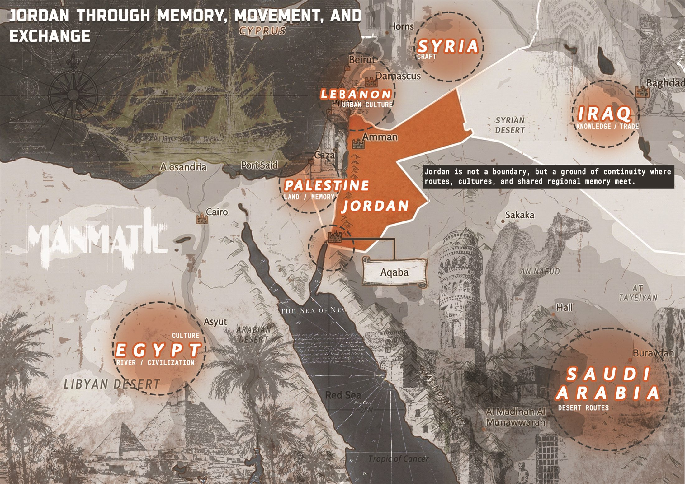
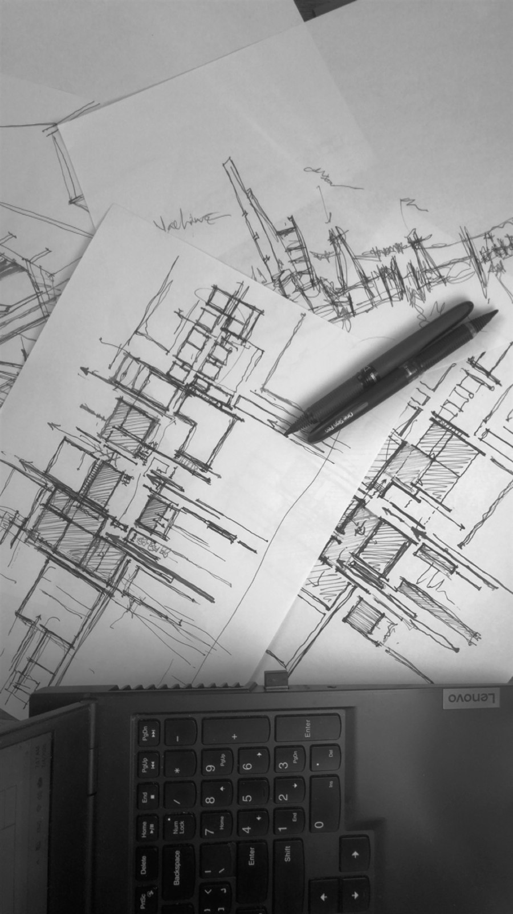
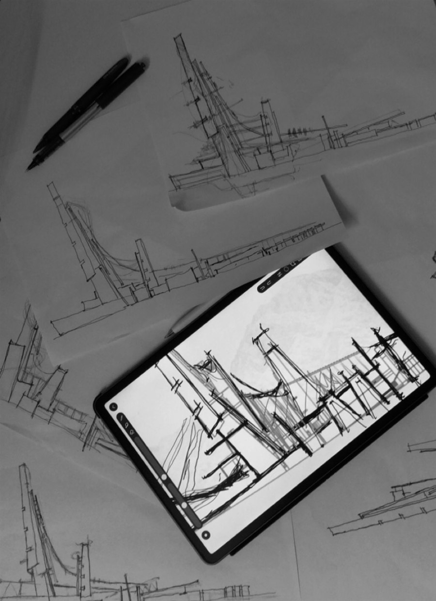

FROM CONCRETE FATIGUE TO GREEN ASSETURBAN / ENVIRONMENTAL DESIGN

PROJECT FILE 04
GROUND OF CONTINUITYMAPPING / CULTURAL REPRESENTATION
FRAME 01 / 05ARCHIVE 2026
PLAYING / MUTEDSIGNAL 013.7
[ A ]FIELD DISPLAYRUN 00:15
FIG. 01 BROADCAST FIELD / SELECTED ARCHITECTURAL WORK
A silent archival sequence presenting Ahmad Alhadidii’s architectural identity and selected project records.
[ A ] CONCEPTUAL FIELD
ARCHITECTURE OF ELSEWHERE
A way of thinking that begins with uncertainty and searches for the hidden order within it. Systems, patterns, and relationships are traced across different fields, then translated into architecture. What first appears fragmented gains coherence; what remains abstract gains structure, presence, and place.
PROFILE IMAGE / 001AHMAD ALHADIDIISUBJECT RECORD / ARCHITECTURE · RESEARCH · COMPUTATION
I approach architecture through research, drawing from systems, contexts, human experience, and emerging technologies to shape meaningful spatial and visual responses. My work moves between architectural design, design research, and computational methods, translating complex relationships into clear spatial structures—an Architecture of Elsewhere.
[ 01 ] EDUCATION
Bachelor of Architecture Al-Balqa Applied University
PROTOCOL PORT / HUMAN–MACHINE INTEGRATION INSTITUTE
The Field does not end as a diagram or archive. Protocol Port translates its research, criteria, protocols, and design dialogue into the first site-specific architectural application in Aqaba.
AQABA / FUNCTION: HUMAN–MACHINE INTEGRATION INSTITUTE

PROCESS 002 / HAND-DRAWN DEVELOPMENT

PROCESS 003 / SECTION AND ELEVATION STUDIES
STATUS / UNDER MODIFICATION STILL NEGOTIATING ITS FINAL FORM.
COMPUTATIONAL STUDY 01 / ANIMATED PARAMETRIC MODEL
The source Rhino model, Grasshopper definition, animation, and physical-model files are required before the geometric operation, controlled parameters, transformation cause, or final professional title can be stated accurately.
A mathematical curve is translated into an architectural path. The exact curve and equation remain unpublished until they can be verified directly from the supplied definition.
Somewhere between the last drawn line and the first built wall, the ground begins to slip away from the familiar. Architecture of Elsewhere holds that unfinished moment when a place is no longer entirely here, but has not yet fully arrived anywhere else.